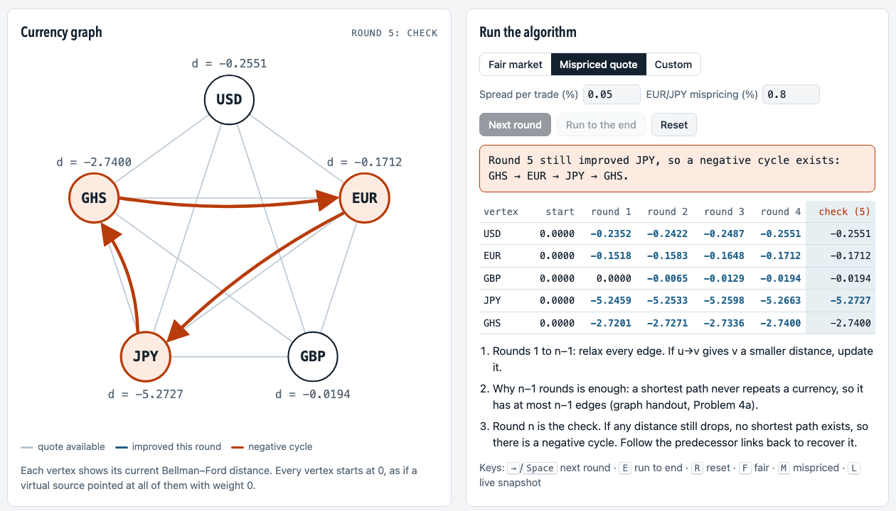

Sample rates from the demo, 0.05% cost per trade and one mispriced EUR→JPY quote.
Directed graph \(G=(V,E)\), \(n=|V|\).
Edge \(u\to v\) with rate \(r(u,v)>0\): one unit of \(u\) buys \(r(u,v)\) units of \(v\).
Buying and selling differ (bid and ask), so \(r(u,v)\,r(v,u)<1\) on a fair pair.
Arbitrage: a cycle \(C\) whose product of rates \(R(C)=\prod_{C} r(u,v)\) is \(>1\).
Theorem 1. With \(w(u,v)=-\log r(u,v)\), a cycle \(C\) is an arbitrage \(\iff w(C)<0\).
\(\log\) turns products into sums and is strictly increasing. The base does not matter.
Arbitrage \(=\) a negative-weight cycle.
Add a virtual source \(s\) with a 0-weight edge to every vertex. Start with \(d(v)=0\) for all \(v\).
Relax \((u,v)\): if \(d(u)+w(u,v) < d(v)\), set \(d(v)\gets d(u)+w(u,v)\) and \(\mathrm{pred}(v)\gets u\).
One round relaxes all \(|E|\) edges once.
for round k = 1, 2, …, n:
changed ← false
for each edge (u, v):
if d(u) + w(u,v) < d(v):
d(v) ← d(u) + w(u,v)
pred(v) ← u; changed ← true
if not changed: return "no arbitrage"
if k = n: return cycle via pred
Invariant: every value \(d(v)\) is the weight of some walk from \(s\) to \(v\).
Lemma (handout, Problem 4a). A path in \(G\) has at most \(n-1\) edges: \(k\) edges visit \(k+1\) distinct vertices, so \(k+1\le n\).
Theorem 2. If \(G\) has no negative cycle, then after round \(n-1\), \(d(v)=\delta(v)\) (true shortest distance) for every \(v\).
Proof. Any walk that repeats a vertex contains a cycle; deleting it does not increase the weight (cycle weight \(\ge 0\)). So some shortest walk is a path, with \(\le n-1\) edges by the Lemma. After round \(n-1\): \(d(v)\le\delta(v)\) by the round lemma, and \(d(v)\ge\delta(v)\) by the invariant. \(\blacksquare\)
Theorem 3. Round \(n\) changes some \(d(v)\) \(\iff\) \(G\) has a negative cycle.
(\(\Rightarrow\)) If no negative cycle: after round \(n-1\), \(d=\delta\) (Thm 2), and \(\delta(v)\le\delta(u)+w(u,v)\) for every edge. Nothing can relax in round \(n\).
(\(\Leftarrow\)) Let \(C=x_0\to\cdots\to x_k=x_0\) with \(w(C)<0\). If round \(n\) changed nothing, then \(d(x_i)\le d(x_{i-1})+w(x_{i-1},x_i)\) for all \(i\). Sum over \(i\): each \(d(x_i)\) appears once per side, so \(0\le w(C)\). Contradiction. \(\blacksquare\)
Recovering it: walk back \(n\) steps along \(\mathrm{pred}\) from a vertex changed in round \(n\); you land on a cycle of pointers, and every such cycle is negative. Full proof in docs/theory.md.
emmanueladutwum123.github.io/fx-arbitrage-graph

Dijkstra settles the nearest vertex forever. That needs \(w\ge 0\).
s→a: 1 s→b: 2 b→a: −2
Dijkstra fixes \(d(a)=1\); the true distance is \(0\). With a negative cycle there is no shortest path at all.
Bellman–Ford: \(\le n\) rounds \(\times\) \(|E|\) edges \(= O(VE)\).
Complete market: \(E=n(n-1)\), so \(O(n^3)\).
Brute force over cycles: \(\sum_{k}\binom{n}{k}(k-1)!\), already \(1{,}112{,}073\) for \(n=10\).
github.com/emmanueladutwum123/fx-arbitrage-graph